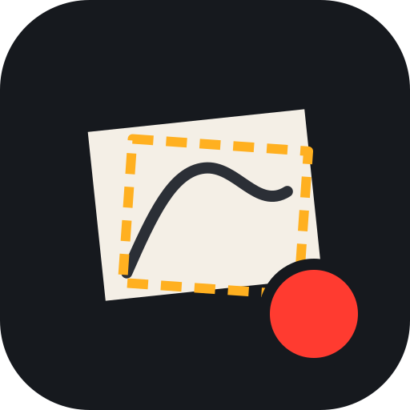

Камера для художника: записывайте процесс, накладывайте полупрозрачный референс поверх холста и привязывайте его к холсту с помощью AR.
Референс виден только на экране — в видео и фото попадает чистый кадр.
Перетащите 4 угла рамки на углы холста
Референс не загружен.
Также можно перетащить файл в окно или вставить из буфера (Ctrl+V).
Двигайте референс пальцем, двумя пальцами — масштаб и поворот, углы — перспектива. На компьютере: колесо — масштаб, Shift+колесо — поворот.
Горячие клавиши: пробел/R — запись, H — скрыть, L — замок, A — AR, P — снимок, O — открыть, ↑↓ — прозрачность.